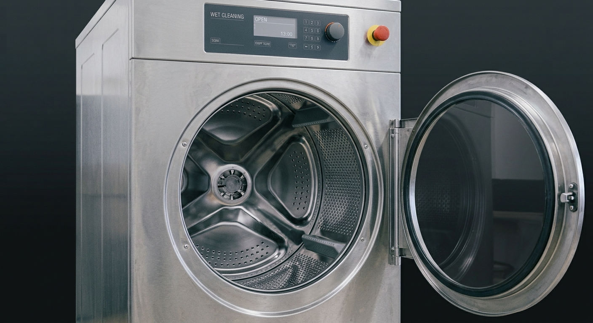
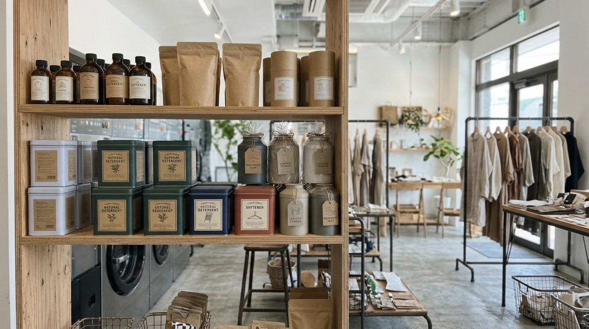

01
洗う
最新鋭の洗濯機器を備えたコインランドリーです。5:00〜25:00の間、お好きな時間にご利用いただけます。
札幌市中央区のクリーニング店。コインランドリー、カフェスタンド、ライフスタイルショップを併設しています。
店舗情報を見るご相談は、お電話・お問い合わせフォームから
080-4731-5551とみおかクリーニングへ、お立ち寄りください。

最新鋭の洗濯機器を備えたコインランドリーです。5:00〜25:00の間、お好きな時間にご利用いただけます。
中標津町の有機牛乳を使った、ソフトクリームが楽しめるカフェスタンドです。洗濯待ちのひとときに、どうぞ。

洗濯用品や日用雑貨を取りそろえた、ライフスタイルショップです。お洗濯が楽しくなるグッズが並びます。
衣類クリーニングと、皮革製品メンテナンスの受付スペースがあります。
クリーニングは、無人受付設備を導入しています。専用アプリで事前に利用予約ができ、仕上がり状況もアプリで確認できます。
受付・利用時間は、5:00〜25:00です。
とみおかクリーニングは、1950年に創業した、北海道発のクリーニング会社です。地域に根ざしたクリーニングを、続けてきました。
初めてのコインランドリーでしたが、清潔で使いやすく、併設のカフェに店員さんもいて、分からないことを聞けて安心です。ショップを見ても楽しいし、カフェもメニューがたくさんあります。洗濯機、乾燥機、洗濯乾燥機の3種類、それぞれ台数もあり、平日昼間は混んでいません。
とにかく綺麗。コインランドリーをやっている間に、コーヒーフロートを飲みました。上に乗ったソフトクリームが美味しいです。
お店の方が皆さん親切で、感じの良い方ばかりでした。ソフトクリームも美味しかったです。商品は、質の良いものばかりが陳列されている印象です。
オシャレな雰囲気で、店員さんもステキな接客でした。オリジナルの商品も多く、拘って選んだ商品が並んでいて、掃除洗濯好きは、いるだけでテンションが上がります。カフェもやっていて、ちょっと一息つくにも最高です！なんだか居心地の良いお店だなぁと思いました。
冬物のコートや布団は、シーズンが終わると、しまう場所に困ります。そんなお客様に向けた、新しいサービスのご提案です。
カフェやライフスタイルショップを併設している強みを、「受け渡しの場所」として活かせるのではないでしょうか。
※このセクションは企業へのご提案です。現在のサービスではありません。